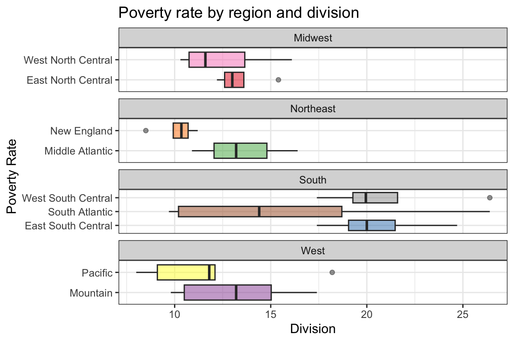
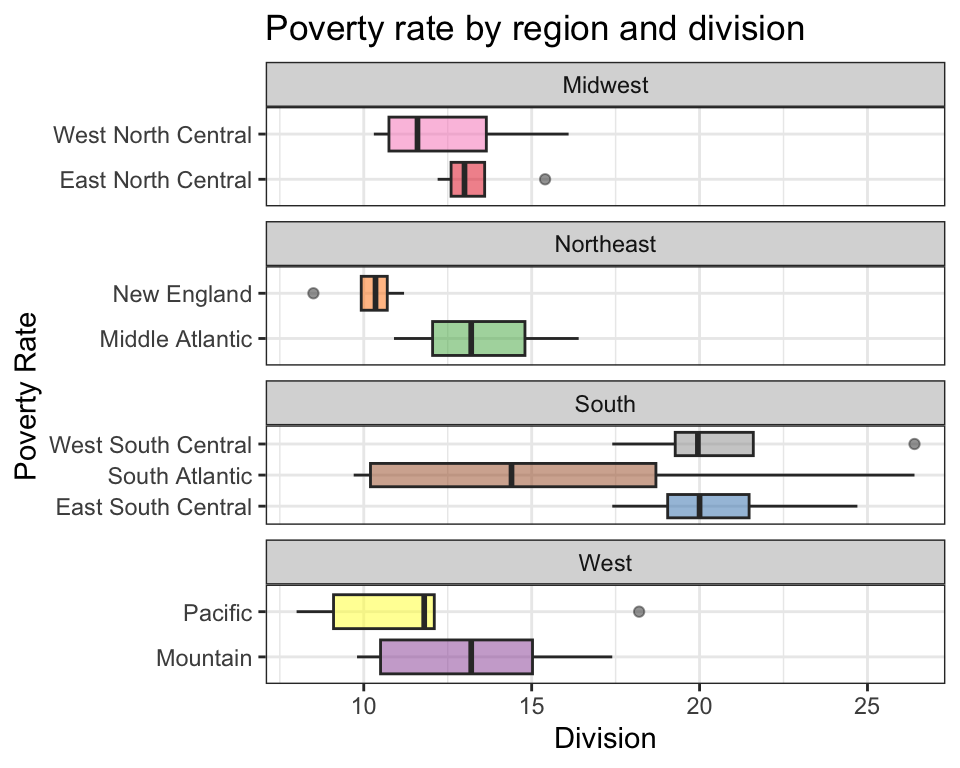
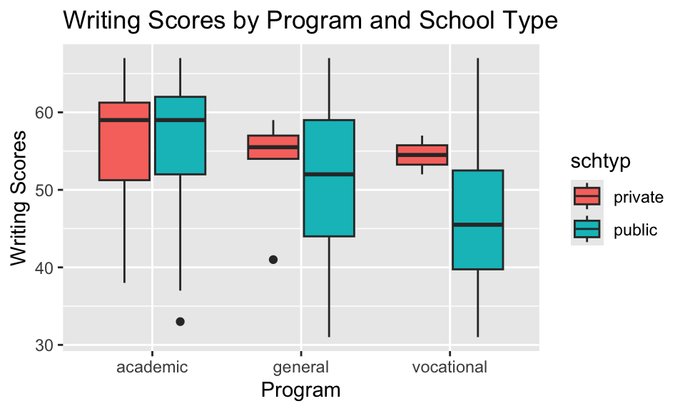

knitr::opts_chunk$set(fig.width=6, fig.height=4) # This sets all figure sizes in the document unless otherwise specified.library(dplyr)
Attaching package: 'dplyr'
The following objects are masked from 'package:stats':
filter, lag
The following objects are masked from 'package:base':
intersect, setdiff, setequal, union
library(ggplot2)
Importing data
Go to Dr. D’s data website to find the following data files. Download them to your computer (ref: HW 09) and import them in the first three questions below. NOTE: Be sure you download the CSV file as .csv and not as a .numbers file. If you create a file in Numbers, you can choose File > Export To > CSV to convert it.
Read in the High School and Beyond data set. Use R functions to create a table that shows how many students are in each program (using the prog variable).
East North Central East South Central Middle Atlantic Mountain
5 4 3 8
New England Pacific South Atlantic West North Central
6 5 9 7
West South Central
4
Read in the countyComplete data set.
county <-read.csv("../data/countyComplete.csv", header =TRUE, sep =",")
When reading in the Excel data set on crime, what do the arguments sheet=1 and col_names=TRUE mean?
Read from the first sheet and the first row contains column names.
Use the str() function to determine how many observations and variables are contained in the countyComplete data set. Write the answer in a complete sentence.
str(county)
'data.frame': 3116 obs. of 56 variables:
$ name : chr "Autauga County" "Baldwin County" "Barbour County" "Bibb County" ...
$ state : chr "Alabama" "Alabama" "Alabama" "Alabama" ...
$ FIPS : int 1001 1003 1005 1007 1009 1011 1013 1015 1017 1019 ...
$ pop2010 : int 54571 182265 27457 22915 57322 10914 20947 118572 34215 25989 ...
$ pop2000 : int 43671 140415 29038 20826 51024 11714 21399 112249 36583 23988 ...
$ age_under_5 : num 6.6 6.1 6.2 6 6.3 6.8 6.5 6.1 5.7 5.3 ...
$ age_under_18 : num 26.8 23 21.9 22.7 24.6 22.3 24.1 22.9 22.5 21.4 ...
$ age_over_65 : num 12 16.8 14.2 12.7 14.7 13.5 16.7 14.3 16.7 17.9 ...
$ female : num 51.3 51.1 46.9 46.3 50.5 45.8 53 51.8 52.2 50.4 ...
$ white : num 78.5 85.7 48 75.8 92.6 23 54.4 74.9 58.8 92.7 ...
$ black : num 17.7 9.4 46.9 22 1.3 70.2 43.4 20.6 38.7 4.6 ...
$ native : num 0.4 0.7 0.4 0.3 0.5 0.2 0.3 0.5 0.2 0.5 ...
$ asian : num 0.9 0.7 0.4 0.1 0.2 0.2 0.8 0.7 0.5 0.2 ...
$ pac_isl : num NA NA NA NA NA NA 0 0.1 0 0 ...
$ two_plus_races : num 1.6 1.5 0.9 0.9 1.2 0.8 0.8 1.7 1.1 1.5 ...
$ hispanic : num 2.4 4.4 5.1 1.8 8.1 7.1 0.9 3.3 1.6 1.2 ...
$ white_not_hispanic : num 77.2 83.5 46.8 75 88.9 21.9 54.1 73.6 58.1 92.1 ...
$ no_move_in_one_plus_year : num 86.3 83 83 90.5 87.2 88.5 92.8 82.9 86.2 88.1 ...
$ foreign_born : num 2 3.6 2.8 0.7 4.7 1.1 1.1 2.5 0.9 0.5 ...
$ foreign_spoken_at_home : num 3.7 5.5 4.7 1.5 7.2 3.8 1.6 4.5 1.6 1.4 ...
$ hs_grad : num 85.3 87.6 71.9 74.5 74.7 74.7 74.8 78.5 71.8 73.4 ...
$ bachelors : num 21.7 26.8 13.5 10 12.5 12 11 16.1 10.8 10.5 ...
$ veterans : int 5817 20396 2327 1883 4072 943 1675 11757 2893 2172 ...
$ mean_work_travel : num 25.1 25.8 23.8 28.3 33.2 28.1 25.1 22.1 23.6 26.2 ...
$ housing_units : int 22135 104061 11829 8981 23887 4493 9964 53289 17004 16267 ...
$ home_ownership : num 77.5 76.7 68 82.9 82 76.9 69 70.7 71.4 77.5 ...
$ housing_multi_unit : num 7.2 22.6 11.1 6.6 3.7 9.9 13.7 14.3 8.7 4.3 ...
$ median_val_owner_occupied : num 133900 177200 88200 81200 113700 ...
$ households : int 19718 69476 9795 7441 20605 3732 8019 46421 13681 11352 ...
$ persons_per_household : num 2.7 2.5 2.52 3.02 2.73 2.85 2.58 2.46 2.51 2.22 ...
$ per_capita_income : int 24568 26469 15875 19918 21070 20289 16916 20574 16626 21322 ...
$ median_household_income : int 53255 50147 33219 41770 45549 31602 30659 38407 31467 40690 ...
$ poverty : num 10.6 12.2 25 12.6 13.4 25.3 25 19.5 20.3 17.6 ...
$ private_nonfarm_establishments : int 877 4812 522 318 749 120 446 2444 568 350 ...
$ private_nonfarm_employment : int 10628 52233 7990 2927 6968 1919 5400 38324 6241 3600 ...
$ percent_change_private_nonfarm_employment: num 16.6 17.4 -27 -14 -11.4 -18.5 2.1 -5.6 -45.8 5.4 ...
$ nonemployment_establishments : int 2971 14175 1527 1192 3501 390 1180 6329 2074 1627 ...
$ firms : int 4067 19035 1667 1385 4458 417 1769 8713 1981 2180 ...
$ black_owned_firms : num 15.2 2.7 NA 14.9 NA NA NA 7.2 NA NA ...
$ native_owned_firms : num NA 0.4 NA NA NA NA NA NA NA NA ...
$ asian_owned_firms : num 1.3 1 NA NA NA NA 3.3 1.6 NA NA ...
$ pac_isl_owned_firms : num NA NA NA NA NA NA NA NA NA NA ...
$ hispanic_owned_firms : num 0.7 1.3 NA NA NA NA NA 0.5 NA NA ...
$ women_owned_firms : num 31.7 27.3 27 NA 23.2 38.8 NA 24.7 29.3 14.5 ...
$ manufacturer_shipments_2007 : int NA 1410273 NA 0 341544 NA 399132 2679991 667283 307439 ...
$ mercent_whole_sales_2007 : int NA NA NA NA NA NA 56712 NA NA 62293 ...
$ sales : int 598175 2966489 188337 124707 319700 43810 229277 1542981 264650 186321 ...
$ sales_per_capita : int 12003 17166 6334 5804 5622 3995 11326 13678 7620 7613 ...
$ accommodation_food_service : int 88157 436955 NA 10757 20941 3670 28427 186533 23237 13948 ...
$ building_permits : int 191 696 10 8 18 1 3 107 10 6 ...
$ fed_spending : int 331142 1119082 240308 163201 294114 108846 195055 1830659 294718 184642 ...
$ fed_spend00 : num 7.58 7.97 8.28 7.84 5.76 ...
$ fed_spend10 : num 6.07 6.14 8.75 7.12 5.13 ...
$ area : num 594 1590 885 623 645 ...
$ density : num 91.8 114.6 31 36.8 88.9 ...
$ smoking_ban : chr "none" "none" "partial" "none" ...
The countyComplete data frame contains 3116 observations (rows) and 56 variables (columns).
Graphing Enhancements
This section will ask you to create graphics, often on data that needs pre-processing using the dplyr verbs you learned in the last homework. No one expects you to have all those commands memorized yet, the key is to know how to go find what you need. So reference last week’s notes and homework while you do this section.
Exploring the poverty rate
This section demonstrates how you can build a nice graph in stages. Each question will have you adjust one thing on the plot. Instead of retyping the entire code each time, copy the code from the prior question and then make the requested adjustment.
This is the suggested way of building an advanced plot. Small bit by bit, changing or adding only one thing at a time.
Using the crime data, create a density plot of the distribution of poverty rate (x) by region (fill). To avoid problems with overplotting, use alpha=.5 inside the density geometry to make the colors transparent.
Capitalize the legend title. _Hint, you’re adding something to the scale_section. Be sure that you continue to build off your code from the previous steps so that your theme is still present.
This works, but I’m not entirely thrilled with how much space it’s taking up. Let’s look at these as boxplots instead of density plots. Start by setting up vertical boxplots, putting your continuous variable on the y axis.
The x-axis is using numbers instead of names now. Let’s fix that by clearly defining that x is division. Note, The division levels will appear to blend together, but we’ll be fixing that in later steps.
In this case, Division is nested within Region and so we don’t need ALL the levels of division to show up in each panel. Let’s “Free” our x axis by adding scales="free_x" to the facet_wrap.
But I really want to see them as horizontal plots, so let’s add a + coord_flip() layer. This also helps with readability of long axis names. Note, you will also need to change your scales to free the y-axis instead now.
Add an appropriate title and axis titles. NOTE: Be sure your axes are correct, due to the effects of coord_flip().
ggplot(crime, aes(y=poverty, x=division, fill=division)) +geom_boxplot(alpha=.5) +facet_wrap(~region, scales="free_y", ncol=1) +theme_bw() +scale_fill_brewer(name="Division", palette="Set1", guide="none") +coord_flip() +ggtitle("Poverty rate by region and division") +ylab("Division") +xlab("Poverty Rate")

. One last touch: adjust the figure size by selecting a new size for your code chunk using “fig.height=” and “fig.width=” in your code chunk options.
ggplot(crime, aes(y=poverty, x=division, fill=division)) +geom_boxplot(alpha=.5) +facet_wrap(~region, scales="free_y", ncol=1) +theme_bw() +scale_fill_brewer(name="Division", palette="Set1", guide="none") +coord_flip() +ggtitle("Poverty rate by region and division") +ylab("Division") +xlab("Poverty Rate")

Challenge Questions (1 pt extra credit - 0.5 per question)
Using the High School and Beyond data set you loaded earlier, construct a boxplot for the Writing Scores write by Program prog that fills by School Type schtyp. To receive full credit, be sure you include a title for your plot, label your axes, and give your legend the title “School Type”.
ggplot(hsb2, aes(x=prog, y=write, fill=schtyp)) +geom_boxplot() +ggtitle("Writing Scores by Program and School Type") +xlab("Program") +ylab("Writing Scores") +scale_fill_discrete("School Type")

Using the countyComplete data set you loaded earlier, construct a scatterplot for per_capita_income against Percentage of Bachelors Degrees bachelors, for ONLY the data from California, Oregon, and Washington. Color and panel on state, and remove the legend. As above, include a title for your plot and label your axes.
county%>%filter(state=="California"| state=="Oregon"| state=="Washington") %>%ggplot(aes(x=bachelors, y=per_capita_income, col=state)) +geom_point() +facet_wrap(~state) +scale_color_discrete(guide="none") +xlab("Bachelors") +ylab("Per Capita Income") +ggtitle("Per Capita Income by Bachelors Degree % for West Coast")